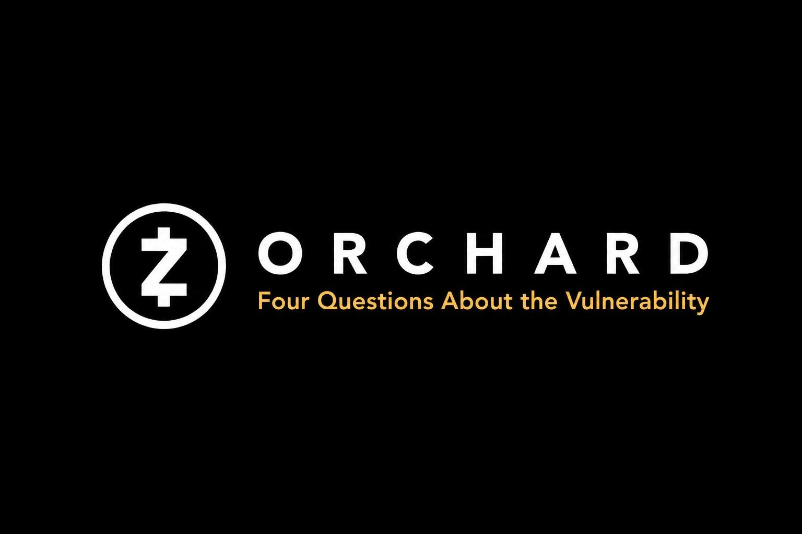
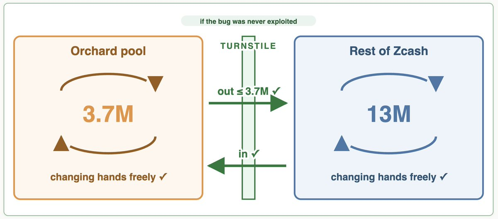
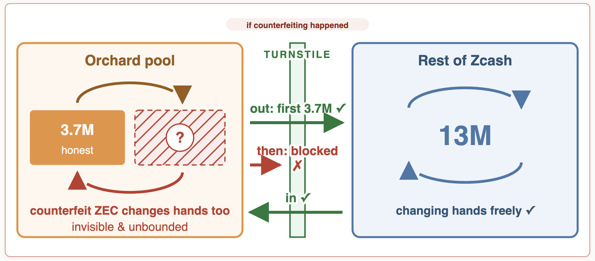
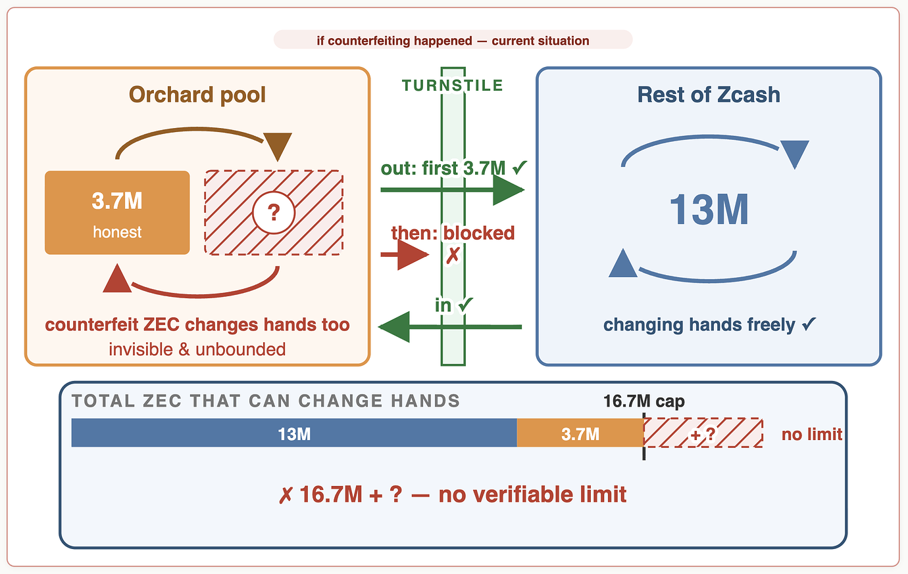
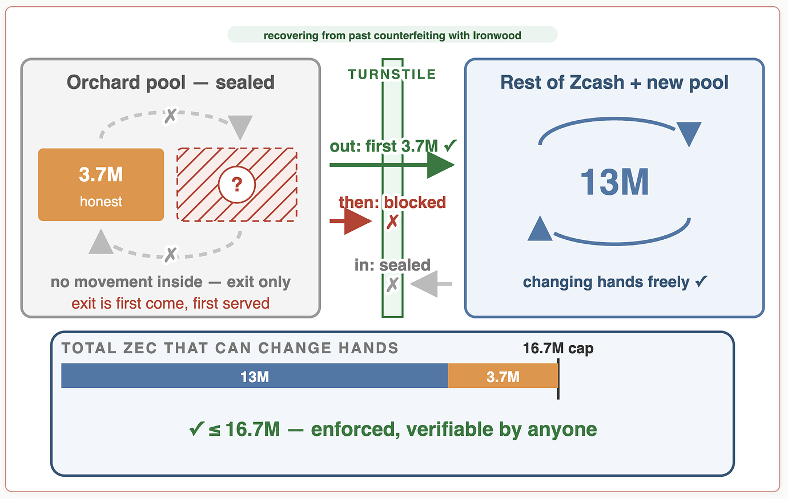

Four Questions About the Orchard Vulnerability

The recent Orchard vulnerability raised important questions about the Zcash supply and the safety of user funds. Discussions have mixed together several distinct issues, making it difficult to understand what the vulnerability actually means for users.
This post attempts to separate those questions and explain what each one means for users.
Four Different Questions
The Orchard vulnerability raises four important questions:
Was the Orchard vulnerability ever exploited?
Will legitimate Orchard funds be recoverable?
Can users verify that the supply of Zcash has not been inflated?
How do we know there aren’t other counterfeiting vulnerabilities?
Was the Orchard vulnerability ever exploited?
Unknown. We believe prior exploitation is unlikely, though we cannot rule it out with certainty. There are three reasons we think exploitation probably did not occur:
The vulnerability was not previously discovered despite years of scrutiny by many of the world’s best cryptographers and security researchers. Its eventual discovery was not accidental; it was found by Taylor Hornby, working for Shielded Labs, as part of a deliberate effort to identify vulnerabilities of this kind before malicious actors could. Taylor used advanced AI-assisted security research techniques and custom-built tooling specifically designed to find subtle flaws that others had missed, which would be more difficult for someone not already an expert on the Zcash codebase.
Once the vulnerability was discovered, the Zcash devs (led by the Zcash Open Development Labs team) quickly coordinated with the mining pools to temporarily freeze the Orchard pool and deploy the fix, limiting the window of opportunity for any attack.
Cryptocurrency exploits are common, and attackers generally try to monetize as fast as they can, especially once the vulnerability becomes public knowledge. For an attacker to profit from this vulnerability, they would need to exchange their counterfeit ZEC for something of value, which would typically result in ZEC exiting the Orchard pool through the turnstile. If this vulnerability had been exploited before it was remediated, we would expect evidence to have emerged by now. Historically, cryptocurrency exploits have been “smash-and-grab” operations, not “4D chess” strategies that remain hidden for months or years.
Will legitimate Orchard funds be recoverable?
We think so, because we think that the vulnerability was never exploited. If that is correct, all legitimate Orchard funds remain fully recoverable.

On the other hand, if counterfeiting has occurred in Orchard, the existing turnstile will limit total. withdrawals to the amount of ZEC that legitimately entered the pool. As a result, if counterfeit funds were withdrawn before legitimate funds, a user would be unable to recover some or all of their legitimate Orchard funds.

We believe this scenario is unlikely. Nevertheless, users who prefer to be extra cautious may choose to move their ZEC out of Orchard. Before doing so, however, they should be aware of several other considerations:
Moving your funds to the transparent pool (i.e. to a t-address) reveals both the amount transferred and the time of the transfer. Those funds also become publicly linked to that t-address.
Moving your funds from the Orchard pool to the Sapling pool reveals the amount transferred and the time of the transfer. However, unlike a transfer to a t-address, it does not link those funds to a specific address or transaction history.
The Sapling pool relies on a trusted setup ceremony that was performed in 2018. Reliance on the security of that trusted setup is an additional risk users should be aware of.
As far as we know, YWallet and Zkool are currently the only widely used self-custody Zcash wallets that support the Sapling pool.
Moving funds to a new wallet or custodial service introduces additional risks, including user error, software bugs, custodian risk, or other unforeseen issues.
On balance, we believe the risks discussed above are moderate. If your funds are currently held in a shielded self-custody wallet, leaving them there is a reasonable choice given our assessment that prior counterfeiting is unlikely. Moving funds elsewhere may also be a reasonable choice if you have a safe way to do so. Users may reach different conclusions based on their circumstances.
Can users verify that the supply of Zcash has not been inflated?
Not today. The prior existence of this vulnerability has made it impossible for users to independently verify that no more than the correct amount of ZEC is circulating within the shielded pool today.

However, as we noted in our previous blog post, Ironwood enables that ability. The diagram below illustrates why.

The proposed network upgrade addresses this problem by adding assurance that there are no more unknown counterfeiting vulnerabilities and by sealing the Orchard pool. No new funds can enter it, and funds can no longer circulate within it. The only remaining path is out through the existing turnstile, which prevents more ZEC from leaving the Orchard pool than the amount that legitimately entered it.
This change makes it possible to verify the soundness of the Zcash supply.
Today, if counterfeit funds exist inside Orchard, they can continue circulating within the pool. After the upgrade, that is no longer possible. Regardless of whether counterfeiting occurred, anyone running a node can verify that no more than the correct amount of ZEC can be circulating.
Users do not need to wait for funds to migrate out of Orchard, nor do they need to reason about how attackers or other users might behave. The protocol itself provides a verifiable guarantee that excess ZEC cannot continue circulating within Orchard and inflating the supply.
This matters because the long-term credibility of Zcash depends on users being able to verify the soundness of its supply for themselves. Ironwood enables users to independently verify that the protocol’s supply limits are being enforced.
How do we know there aren’t other counterfeiting vulnerabilities?
We don’t know for sure yet, but we have reason to think there are no more. Shielded Labs and multiple other teams have been carefully scrutinizing the Zcash protocol for other counterfeiting vulnerabilities. This has included, with the help of Anthropic, using the unreleased Mythos AI model to search for additional vulnerabilities shortly before Mythos was suspended. We plan to share more details about this review and its findings in a future post.
So far, no more counterfeiting vulnerabilities have been identified. The high level of expertise, effort, and advanced AI-assisted analysis involved in this search gives us additional confidence that no similar vulnerabilities remain undiscovered.
Additionally, we are working with the Tachyon Project and others to develop additional assurance that no more counterfeiting vulnerabilities exist in Zcash. We’ll explain more about that in a future post as well.
Conclusion
The Orchard vulnerability presents four important questions: whether the vulnerability was ever exploited, whether legitimate Orchard funds are recoverable, whether users can verify that the supply of Zcash has not been inflated, and whether other undiscovered counterfeiting vulnerabilities remain.
We believe prior exploitation is unlikely and therefore that legitimate Orchard funds are recoverable and the current supply of Zcash is sound. We also have increasing confidence that no other undiscovered counterfeiting vulnerabilities exist, based on ongoing review by multiple independent researchers and teams. However, users cannot currently verify that the Zcash supply is sound, and they should not have to rely on our assessment—or anyone else’s.
The proposed network upgrade solves that problem. By sealing the Orchard pool, it provides users the ability to independently verify the soundness of the Zcash supply. Users no longer need to determine whether counterfeiting occurred in order to verify that the protocol’s supply limits are upheld.
Acknowledgements
The diagrams and some of the text in this post were created with assistance from Anthropic’s Claude Fable 5 (before it was suspended) and OpenAI’s GPT 5.5. Thanks to Sean Bowe, Mark Henderson, and Haseeb Qureshi for their review and feedback.